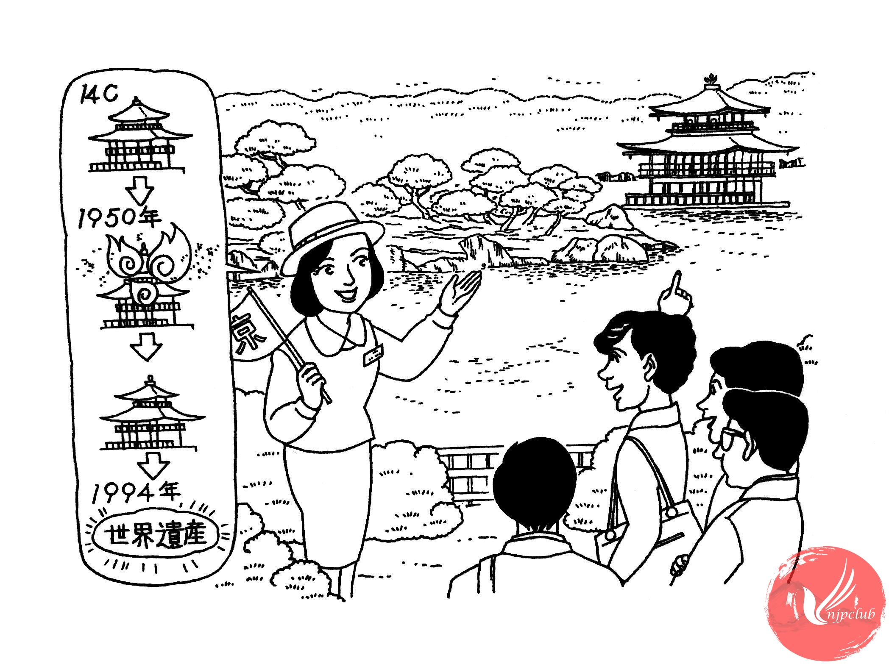

| ガイド： |
皆様、あちらが 有名な 金閣寺です。 金閣寺は 14世紀に 建てられました。 1950年に 一度 焼けて しまいましたが、その後 新しい 建物が 建てられて、1994年に 世界遺産になりました。 京都で 人気が ある お寺の 一つです。 |
| カリナ： |
きれいですね。壁が 金色ですが、本物の 金ですか。 |
| ガイド： |
はい。金が 20キロぐらい 使われました。 |
| カリナ： |
そうですか。あの 中に 入れますか。 |
| ガイド： |
中には 入れないんです。 |
|
池の 周りを 歩きながら 見て ください。 |
|
| ---------------------- | |
| カリナ： |
紅葉が きれいですね。 |
| ガイド： |
ええ。金閣寺は 紅葉を 雪の 季節が 特に 美しいと 言われています。 |